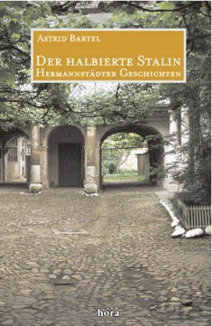

Der halbierte Stalin
Hermannstädter Geschichten

Wo ist denn nur die rote Fahne? Wir suchen
verzweifelt im ganzen Haus. Gleich wird die Polizei
wiederkommen - und noch immer ist nicht geflaggt!
Schließlich muss Klaras weiter, roter Rock dafür geopfert
werden. Wieder eine brenzlige Situation gerettet!
Von schweren und guten Tagen im Hermannstadt der Nachkriegszeit wird berichtet. Vom "Erblühen" des Sozialismus, von Enteignung, Lebensmittelrationierung und politischen Schikanen. Nur im nachbarlichen Zusammenhalt, im Miteinander über alle Grenzen hinweg von Sprache, Kultur und Konfession war ein Leben damals möglich. Und die Hermannstädter konnten dieser schweren Nachkriegszeit sogar Fröhlichkeit abgewinnen! Für sie war das damals ein Leben und Überleben mit Mut und Übermut.
Vergnügliche Geschichten vor ernstem Hintergrund im vielsprachigen Hermannstadt.
Astrid Bartel verlebte ihre Kindheit und Jugend in Hermannstadt / Sibiu (Rumänien). Als Zwanzigjährige siedelte sie mit ihren Eltern 1965 nach Deutschland aus. In Köln studierte sie Germanistik und Geographie. Seit 1975 lebt Astrid Bartel in Berlin. Sie ist verheiratet und hat vier Söhne.
Astrid Bartel: Der halbierte Stalin
Hermannstädter Geschichten
hora-Verlag, Hermannstadt / Sibiu, 2007
212 Seiten, 18 Zeichnungen
978-973-8226-61-6.
15 Euro
Bestellmöglichkeiten:
- Im Siebenbürger-Shop:
http://www.siebenbuerger.de/shop - Direkt beim hora-Verlag in Hermannstadt/Sibiu:
Internet: www.hora-verlag.ro
Telefon aus Deutschland: 0040-269-211 839
E-Mail: mail@hora-verlag.ro
Postkarte: Editura hora, Strada N.D. Cocea 9, RO 550370 Sibiu
Weiteres über "Der halbierte Stalin":
- Buchvorstellung
- Zeitungsbericht aus der Allgemeinen Deutschen Zeitung für Rumänien
- Zeitungsbericht aus der Hermannstädter Zeitung
- Zeitungsbericht aus der Siebenbürgischen Zeitung